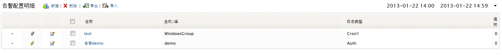

告警
要使EventLog Analyzer生成告警通知，您需要首先创建一个告警配置文件，要创建告警配置文件，可通过以下菜单实现：
要创建告警配置文件，请参阅“怎样创建告警配置文件”部分。
怎样编辑告警配置文件？

编辑/删除菜单将会将您带到告警配置文件的明细页面，这里您可以看到所有的告警配置文件，以及它们对应的编辑图标。
- 点击编辑图标编辑所选的告警配置文件。
怎样删除告警配置文件？
-
选择告警配置文件对应的复选按钮。
-
点击删除菜单链接即可删除所选的配置文件。
所有告警配置文件
在告警配置文件明细页面，您可以查看所有的告警配置文件，包括配置文件的名称、关联的主机/主机组、要生成告警的日志类型、每个配置文件生成的告警数量，执行启用/禁用操作，或编辑/删除配置文件。
|